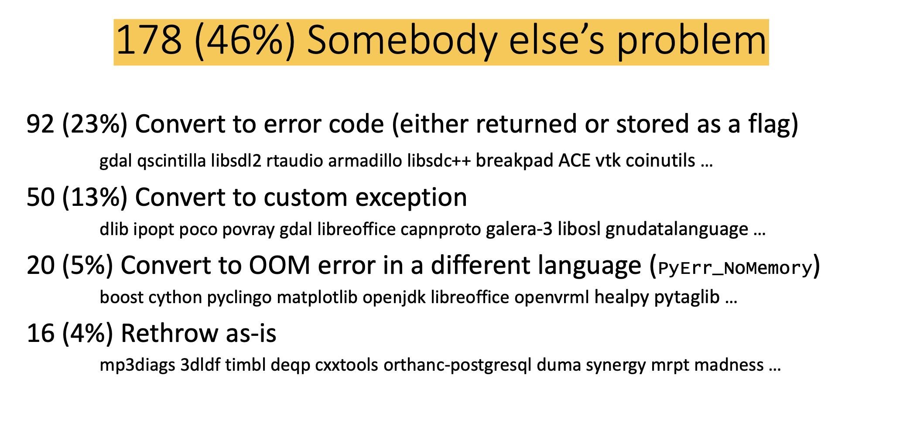
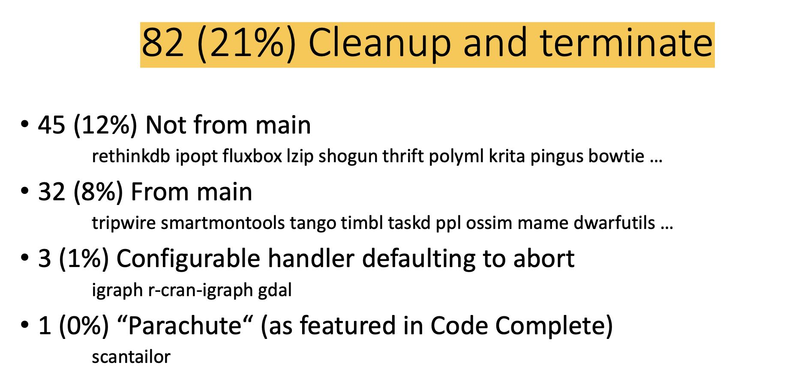
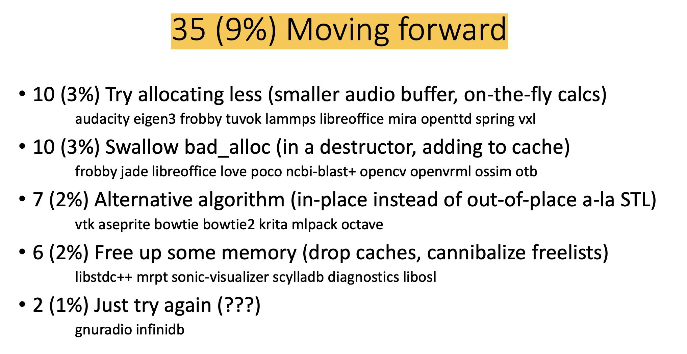
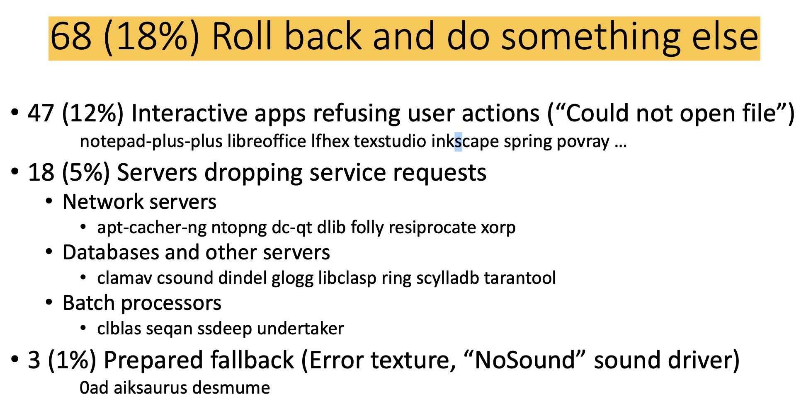
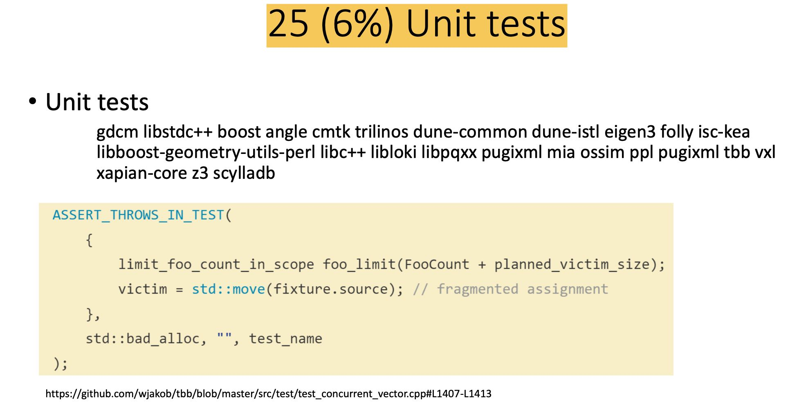
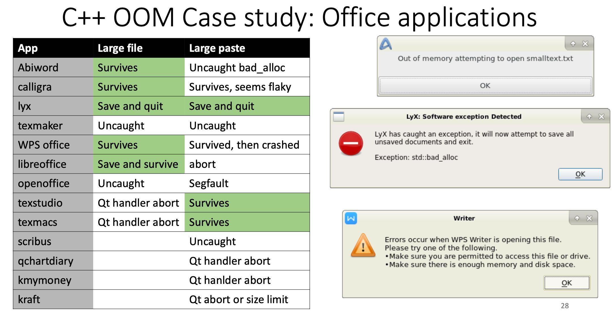
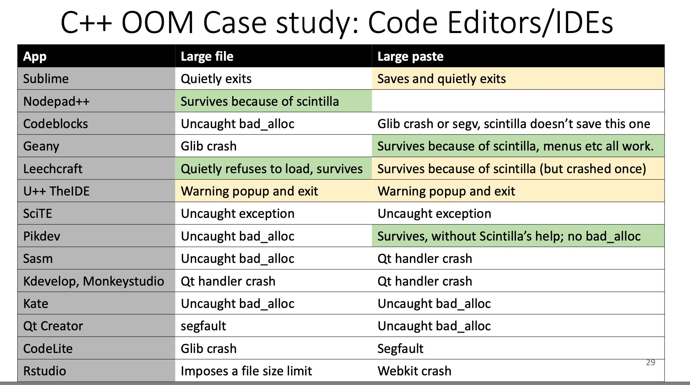
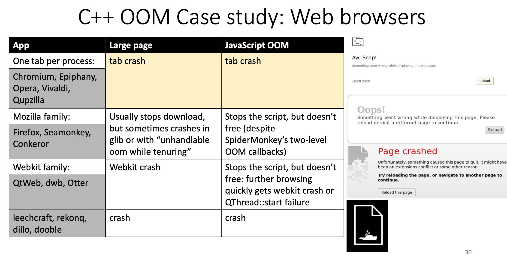
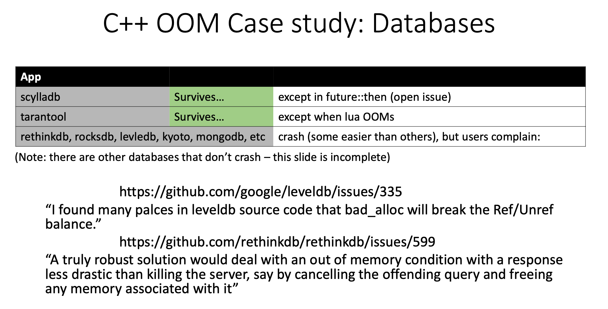

Examining applications that do not terminate on std::bad_alloc
https://www.youtube.com/watch?v=QIiFsqsb9HM
如何处理std::bad_alloc以及OOM？作者对许多lib/app的处理方式进行了总结，分析和统计。
bad_alloc并不一定是OOM, 比如 std::vector<int>(-1) 在进行参数校验阶段也可能出现 bad_alloc. 不过这里主要还是分析OOM的情况。
C libs在处理malloc返回nullptr时有几种处理办法：return error code, longjmp, give up/fail fast. C++处理bad_alloc的方式其实也差不多，就是能catch住。但是其实前面两种办法也不能很好应对，可能是hang住，也可能在其他地方crash. 这个作者后面会对实际应用程序表现进行分析。
作者在Debina code search上针对 catch bad_alloc 做了统计分析
- 46% 交给上层进行处理
- 21% 进行清理和终止
- 9% 重试或者是更换策略
- 18% 取消或者是回滚
- 剩下6%出现在UT中





- 178 (46%) Somebody else’s problem
- 92 (23%) Convert to error code (either returned or stored as a flag) gdal qscintilla libsdl2 rtaudio armadillo libsdc++ breakpad ACE vtk coinutils …
- 50 (13%) Convert to custom exception. dlib ipopt poco povray gdal libreoffice capnproto galera-3 libosl gnudatalanguage …
- 20 (5%) Convert to OOM error in a different language (PyErr_NoMemory) boost cython pyclingo matplotlib openjdk libreoffice openvrml healpy pytaglib …
- 16 (4%) Rethrow as-is. mp3diags 3dldf timbl deqp cxxtools orthanc-postgresql duma synergy mrpt madness …
- 82 (21%) Cleanup and terminate
- 45 (12%) Not from main. rethinkdb ipopt fluxbox lzip shogun thrift polyml krita pingus bowtie …
- 32 (8%) From main. tripwire smartmontools tango timbl taskd ppl ossim mame dwarfutils …
- 3 (1%) Configurable handler defaulting to abort igraph r-cran-igraph gdal
- 1 (0%) “Parachute“ (as featured in Code Complete) scantailor
- 35 (9%) Moving forward
- 10 (3%) Try allocating less (smaller audio buffer, on-the-fly calcs) audacity eigen3 frobby tuvok lammps libreoffice mira openttd spring vxl
- 10 (3%) Swallow bad_alloc (in a destructor, adding to cache) frobby jade libreoffice love poco ncbi-blast+ opencv openvrml ossim otb
- 7 (2%) Alternative algorithm (in-place instead of out-of-place a-la STL) vtk aseprite bowtie bowtie2 krita mlpack octave
- 6 (2%) Free up some memory (drop caches, cannibalize freelists) libstdc++ mrpt sonic-visualizer scylladb diagnostics libosl
- 2 (1%) Just try again (???) gnuradio infinidb
- 68 (18%) Roll back and do something else
- 47 (12%) Interactive apps refusing user actions (“Could not open file”) notepad-plus-plus libreoffice lfhex texstudio inkscape spring povray …
- 18 (5%) Servers dropping service requests
- Network servers. apt-cacher-ng ntopng dc-qtdlib folly resiprocate xorp
- Databases and other servers. clamav csound dindel glogg libclasp ring scylladb tarantool
- Batch processors. clblas seqan ssdeep undertaker
- 3 (1%) Prepared fallback (Error texture, “NoSound” sound driver) 0ad aiksaurus desmume
- 25 (6%) Unit tests
大部分代码都对std_alloc进行了处理，但是实际效果如何呢？并不是特别理想。作者针对Offcie, IDE, Web Browser, Database做了分析. （作者也说了还是有不少DB其实是没有crash的）




最后作者给了几个应对bad_alloc的建议：
- 用户肯定是希望软件可以应对bad alloc的
- RAII是个好东西，但是不要在dtor里面抛出bad_alloc
- 不用追求完美，可以使用各种混合方案，只要能控制住就行
- 不要低估库对bad_alloc的影响，如果库本身就不是exception safe的就惨了。